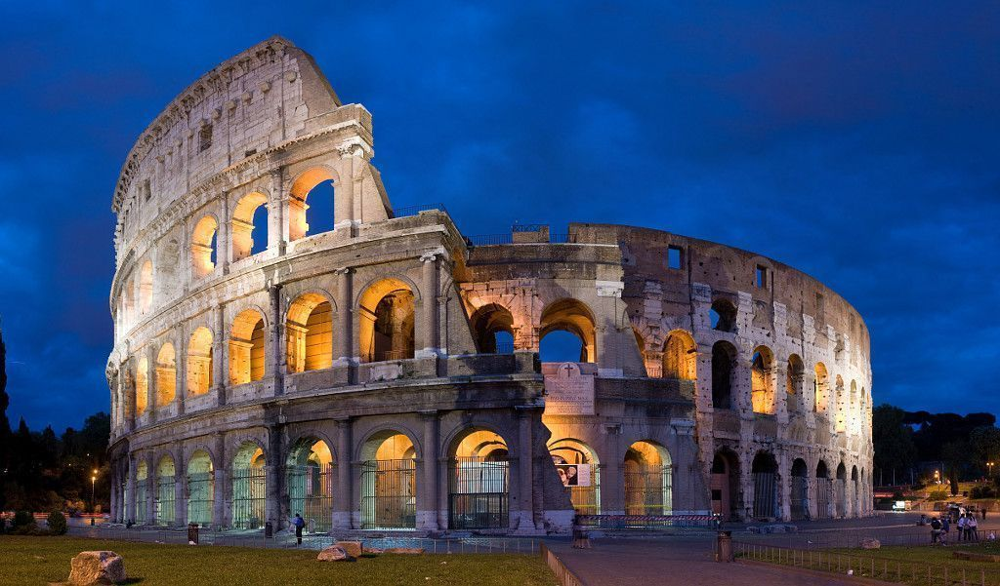
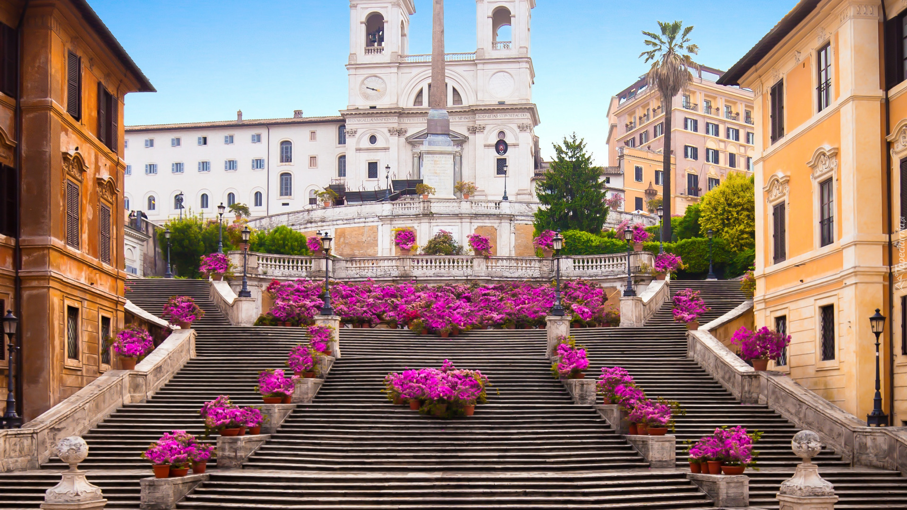
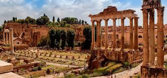

Strona o Rzymie
Rzym ::: Pompeje ::: Kraków
Rzym – stolica i największe miasto Włoch, położone w środkowej części kraju nad rzeką Tyber i Morzem Śródziemnym, zarazem stolica regionu administracyjno-historycznego Lacjum (Lazio). Centrum administracyjne (wł. comune speciale) ma powierzchnię 1287 km² i liczbę ludności 2 825 661, będąc trzecim co do wielkości miastem Unii Europejskiej. Miasto Stołeczne Rzym ma 4 331 856 mieszkańców. Rzym od starożytności znany jest jako Wieczne Miasto (łac. Roma Aeterna), a także „stolica świata” (łac. caput mundi – dosłownie „głowa świata”). Rzym jest metropolią o znaczeniu globalnym, a także dużym węzłem komunikacyjnym z jednym z największych międzynarodowych portów lotniczych w Europie, który obsługuje ponad 38 milionów pasażerów rocznie, rozbudowaną siecią autostrad i linii kolei dużych prędkości. Światowy ośrodek turystyczny z bardzo bogatymi zabytkami starożytności i średniowiecza (kościoły, bazyliki, Koloseum, pałace, akwedukty, fontanny i wiele innych budowli), niezwykle bogate muzea, nowoczesne osiedla mieszkaniowe na przedmieściach. W 1960 roku organizował Letnie Igrzyska Olimpijskie. W 2017 roku Rzym odwiedziło 9,5 mln turystów w ciągu roku. Znajdują się tu siedziby dwóch organizacji ONZ: organizacji do spraw Wyżywienia i Rolnictwa oraz Międzynarodowego Funduszu Rozwoju Rolnictwa. W granicach Rzymu, na prawym brzegu Tybru, leży miasto-państwo Watykan (łac. Status Civitatis Vaticanæ), będący enklawą na terytorium państwowym Włoch.
Koloseum

Koloseum, właściwie amfiteatr Flawiuszów(łac. Amphitheatrum Flavium) – amfiteatr w Rzymie, wzniesiony w latach 70–72 do 80 n.e. przez Wespazjana i Tytusa – cesarzy z dynastii Flawiuszów. Jest to duża, eliptyczna budowla o długości 188 m i szerokości 156 m, obwodzie 524 m, wysokości 48,5 m, z pojemną widownią, która mogła pomieścić od 45 do 50 tysięcy widzów; z galeriami komunikacyjnymi oraz areną z systemem podziemnych korytarzy. W czterokondygnacyjnym podziale zewnętrznym zastosowano spiętrzenie porządków (najniższa kondygnacja w porządku toskańskim, druga w jońskim, trzecia w korynckim). Trzy niższe kondygnacje związane są z konstrukcyjnym układem arkad, czwarta, najwyższa została zaopatrzona tylko w małe okna. Od strony wewnętrznej budowla jest pięciokondygnacyjna. Cztery kondygnacje zbudowano jako układ pomieszczeń wydzielonych pomiędzy filarami, ścianami, ze sklepieniami kolebkowymi i krzyżowymi. Umieszczono tam bufety, szatnie, natryski, pomieszczenia dla gladiatorów, klatki dla zwierząt, korytarze. Wokół areny wzniesione było podium. Do Koloseum prowadziło 80 ponumerowanych wejść (zachowały się oznaczenia wejść od nr XXIII do LIV), które zapewniały szybkie (przez ok. 6 minut) opuszczenie widowni przez widzów (jednak taką możliwość mieli tylko widzowie z dolnych i środkowych rzędów). Istniała też możliwość przykrycia całej widowni specjalną osłoną (velarium) w deszczowe lub bardzo słoneczne dni.
Schody Hiszpańskie

Schody Hiszpańskie (wł. Scalinata di Trinità dei Monti) – scenograficzne schody w Rzymie, w rione Campo Marzio (R. IV), rokokowe, wzniesione w latach 1723–1725 według projektu Francesca De Sanctisa i Alessandra Specchiego; schody prowadzą z pl. Hiszpańskiego do kościoła Trinità dei Monti. Mają 138 stopni i należą do najdłuższych oraz najszerszych w Europi. Schody Hiszpańskie zostały ukończone na Jubileusz w 1725 roku i uroczyście zainaugurowane przez papieża Benedykta XIII. Na szczycie schodów znajduje się XVI-wieczny kościół Trinità dei Monti (kościół św. Trójcy), zbudowany według projektu Carla Maderna. Fundatorem schodów był Francuz, Etienne Gueffier, jednak swoją nazwę zawdzięczają Ambasadzie Hiszpańskiej, która w momencie powstawania konstrukcji znajdowała się w usytuowanym obok Pałacu Mondaleschi. Włosi nazywają schody Scalinata di Trinità dei Monti, od nazwy kościoła, do którego prowadzą. Kościół znajduje się obecnie (od 25 lipca 2016) pod opieką francuskiej Wspólnoty Emmanuel. Schody Hiszpańskie należą do miejsc tłumnie odwiedzanych przez turystów. Odbywają się na nich coroczne pokazy mody a wiosną zdobi je kwiatowa dekoracja ustawiana z okazji festiwalu kwiatów. Zimą, w okresie Bożego Narodzenia, na tarasie schodów ustawiana jest szopka. To jedne z najdłuższych i najszerszych schodów w Europie[1] (ustępują pod tym względem Schodom Potiomkinowskim w Odessie).
Panteon

Panteon w Rzymie (łac. Pantheon, z greckiego Πάνθειον, pan – wszystko, theoi – bogowie, panteon – miejsce poświęcone wszystkim bogom) – okrągła świątynia na Polu Marsowym, ufundowana przez cesarza Hadriana w roku 126 na miejscu wcześniejszej z 27 r. p.n.e., zniszczonej w pożarze w 64 r. n.e. Budową gmachu kierował Apollodoros, zesłany, po czym prawdopodobnie stracony później przez cesarza. Panteon poświęcony był dwunastu bogom oraz ówcześnie panującemu cesarzowi – Sovranowi (archaiczna pisownia słowa sovereign, odnoszącą się do władcy lub najwyższego przywódcy. To użycie jest zgodne z jego kontekstem historycznym, w którym oznacza postać autorytetu, szczególnie w odniesieniu do władzy boskiej lub królewskiej). Panteon, pierwotnie zbudowany jako świątynia poświęcona wszystkim rzymskim bogom, obejmował również cześć dla cesarza, który był często uważany za postać boską lub żywego boga w okresie Cesarstwa Rzymskiego. Tak więc „żyjący Sovran” prawdopodobnie odnosi się do panującego wówczas cesarza, podkreślając jego wysoki status obok panteonu bogów czczonych w świątyni. Od VII wieku Panteon jest użytkowany jako katolicki kościół pw. Santa Maria ad Martyres (pol. Najświętszej Marii Panny od Męczenników). Jest jedną z najlepiej zachowanych budowli z czasów starożytnego Rzymu. 42-metrowa kopuła Santa Maria del Fiore Filippo Bruneleschiego we Florencji została wybudowana na wzór tej z Rzymu. Na panteonie wzorowany jest także warszawski kościół św. Aleksandra przy placu Trzech Krzyży.
Forum

Forum Romanum jest jednym z najważniejszych obiektów turystycznych w Rzymie. Prace wykopaliskowe zapoczątkowano w 1803, a ich przewodnictwem kierował Carlo Fea, którego celem było oczyszczenie obszaru wokół łuku triumfalnego cesarza Septymiusza Sewera. Zapoczątkowało to nową erę w praktyce archeologicznej na tym stanowisku, ponieważ praca Fea zainicjowała szeroko zakrojone badania warstw i struktur Forum, które były zakopane przez stulecia. Przez cały XIX wiek prowadzono dalsze wykopaliska, w szczególności przez Giacomo Boniego, który zastosował bardziej rygorystyczne metodologie, które zmieniły rozumienie historycznego znaczenia Forum. Praca Boniego ujawniła nie tylko pozostałości architektoniczne, ale także warstwy stratygraficzne, które dostarczyły wglądu w rozwój Rzymu na przestrzeni czasu. Od 1898 prace są prowadzone systematycznie. Restauracja zabytków została przerwana przez I wojnę światową. W 1980 zlikwidowano ruchliwą ulicę pomiędzy zboczami Kapitolu a Świątynią Saturna, stwarzającą poprzez ruch samochodowy zanieczyszczenie środowiska, co umożliwiło także kontynuowanie prac wykopaliskowych oraz konserwację zabytków. W ostatnich latach archeolodzy skupili się na odkrywaniu wczesnych warstw osadniczych pod Forum, datowanych na VIII-VII wiek p.n.e., oraz badaniach struktur powstałych w późniejszym okresie, takich jak Rostra i Świątynia Saturna. Udało się im zidentyfikować nieznane wcześniej elementy architektoniczne i ślady użytkowania przestrzeni w różnych epokach historycznych.
Fontanna

Fontanna di Trevi (wł. Fontana di Trevi) – najbardziej znana barokowa fontanna w Rzymie, w rione Trevi (R. II). Została zbudowana z inicjatywy Klemensa XII w miejscu istniejącej wcześniej fontanny zaprojektowanej przez Leona Battiste Albertiego z 1435 r. Zasila ją woda doprowadzona akweduktem zbudowanym w 19 r. p.n.e. przez Agrypę, tym samym, który zasila fontannę Barcaccia znajdującą się u podnóża Schodów Hiszpańskich. W 1640 Urban VIII zainicjował dzieło przebudowy fontanny. Monumentalny projekt przedstawił Giovanni Lorenzo Bernini. Nie doszedł on jednak do skutku z powodu problemów finansowych dworu papieskiego. Klemens XII w 1732 ogłosił konkurs na nową fontannę. Papież wybrał projekt Niccolò Salvi. Prace trwały od 1735 do 1776. Sam autor projektu nie dożył zakończenia budowy. Forma tej barokowej fontanny przypomina fasadę budynku, ma 20,0 m szerokości i 26,0 m wysokości. Centralnymi postaciami fontanny są Okeanos i dwa trytony, będące symbolami Kastora i Polluksa. Bóstwo oceanów znajduje się na rydwanie zaprzężonym w dwa hippokampy (hybrydy konia i ryby), z których jeden jest spokojny, prowadzony przez trytona z prawej strony, tryton z lewej strony natomiast stara się okiełznać niespokojnego konia. Symbolizują one dwa odmienne stany morza (cisza i sztorm). Cztery statuy umieszczone na balustradzie symbolizują cztery pory roku (są to dzieła Corsiniego, Ludovisiego, Pincellottiego i Queirolego). W sąsiednich niszach znajdują się kobiece postaci będące alegoriami Zdrowia (po prawej) i Obfitości (po lewej).Legenda wiąże nazwę fontanny z imieniem Trevia noszonym przez dziewicę (łac. virgo), która odkryła źródło wody wykorzystane przy budowie akweduktu. Wodę doprowadzaną przez ten akwedukt do fontanny nazywa się Acqua Virgo.